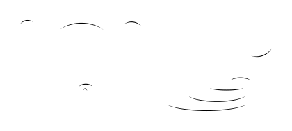

candidate #3
x=174.902
1/8 Down: conf=0.131 d=6.633

candidate #7
x=174.902

candidate #17
x=226.302

candidate #18
x=226.302
1/16 Down: conf=0.165 d=5.054

candidate #18
x=262.165
1/16 Down: conf=0.165 d=5.054

candidate #20
x=262.165
Every MusicSymbolCandidate inside the free-stem endpoint search radius is shown, including candidates rejected by geometry before PCA. The SVG is the exact smooth candidate geometry converted to contours for recognition.
| # | Candidate | Stem | Endpoint distance | PCA candidates | Verdict |
|---|---|---|---|---|---|
| 007 |  candidate #51 | Down x=305.38 | 0 sp | — | rejected before PCA: width 0sp < 0.12sp |
| 008 |  candidate #62 | Up x=373.057 | 0 sp | — | rejected before PCA: width 0sp < 0.12sp |
| # | Candidate | Stem | Endpoint distance | PCA candidates | Verdict |
|---|---|---|---|---|---|
| 009 |  candidate #172 | Down x=494.094 | 0 sp | — | rejected before PCA: width 0sp < 0.12sp |
| 010 |  candidate #183 | Up x=542.697 | 0 sp | — | rejected before PCA: width 0sp < 0.12sp |
| 011 |  candidate #184 | Up x=542.697 | 0.63 sp | 1/8 Down: conf=0.216 d=3.631 1/16 Down: conf=0.165 d=5.054 | rejected by PCA |
| 012 |  candidate #184 | Up x=576.272 | 0.496 sp | 1/8 Down: conf=0.216 d=3.631 1/16 Down: conf=0.165 d=5.054 | rejected by PCA |
| 013 |  candidate #186 | Up x=576.272 | 0 sp | — | rejected before PCA: width 0sp < 0.12sp |
| # | Candidate | Stem | Endpoint distance | PCA candidates | Verdict |
|---|---|---|---|---|---|
| 014 |  candidate #222 | Down x=617.194 | 0 sp | — | rejected before PCA: width 0sp < 0.12sp |
| 015 |  candidate #233 | Up x=666.969 | 0 sp | — | rejected before PCA: width 0sp < 0.12sp |
| # | Candidate | Stem | Endpoint distance | PCA candidates | Verdict |
|---|---|---|---|---|---|
| 016 |  candidate #261 | Down x=131.921 | 0 sp | — | rejected before PCA: width 0sp < 0.12sp |
| 017 |  candidate #262 | Up x=138.815 | 0 sp | — | rejected before PCA: width 0sp < 0.12sp |
| 018 |  candidate #265 | Up x=138.815 | 0.631 sp | 1/8 Down: conf=0.282 d=2.541 1/16 Down: conf=0.208 d=3.814 | rejected by PCA |
| 019 |  candidate #265 | Up x=179.252 | 0.536 sp | 1/8 Down: conf=0.282 d=2.541 1/16 Down: conf=0.208 d=3.814 | rejected by PCA |
| 020 |  candidate #266 | Up x=179.252 | 0 sp | 1/16 Down: conf=0.233 d=3.284 1/8 Down: conf=0.178 d=4.617 | rejected: PCA direction Down != stem Up |
| 021 |  candidate #268 | Up x=179.252 | 0 sp | 1/8 Down: conf=0.678 d=0.476 1/16 Down: conf=0.211 d=3.736 | rejected: PCA direction Down != stem Up |
| 022 |  candidate #269 | Up x=179.252 | 0 sp | — | rejected before PCA: width 0sp < 0.12sp |
| # | Candidate | Stem | Endpoint distance | PCA candidates | Verdict |
|---|---|---|---|---|---|
| 023 |  candidate #300 | Down x=252.224 | 0 sp | — | rejected before PCA: width 0sp < 0.12sp |
| 024 |  candidate #301 | Up x=259.112 | 0 sp | — | rejected before PCA: width 0sp < 0.12sp |
| 025 |  candidate #305 | Up x=259.112 | 0.631 sp | 1/8 Down: conf=0.282 d=2.541 1/16 Down: conf=0.208 d=3.814 | rejected by PCA |
| 026 |  candidate #305 | Up x=298.028 | 0.494 sp | 1/8 Down: conf=0.282 d=2.541 1/16 Down: conf=0.208 d=3.814 | rejected by PCA |
| 027 |  candidate #306 | Up x=298.028 | 0 sp | 1/16 Down: conf=0.234 d=3.283 1/8 Down: conf=0.178 d=4.617 | rejected: PCA direction Down != stem Up |
| 028 |  candidate #308 | Up x=298.028 | 0 sp | 1/8 Down: conf=0.678 d=0.476 1/16 Down: conf=0.211 d=3.736 | rejected: PCA direction Down != stem Up |
| 029 |  candidate #309 | Up x=298.028 | 0 sp | — | rejected before PCA: width 0sp < 0.12sp |
| # | Candidate | Stem | Endpoint distance | PCA candidates | Verdict |
|---|---|---|---|---|---|
| 030 |  candidate #367 | Down x=360.568 | 0.185 sp | 1/16 Down: conf=0.198 d=4.038 1/8 Down: conf=0.133 d=6.524 | rejected by PCA |
| 031 |  candidate #393 | Down x=360.568 | 0 sp | — | rejected before PCA: width 0sp < 0.12sp |
| # | Candidate | Stem | Endpoint distance | PCA candidates | Verdict |
|---|---|---|---|---|---|
| 032 |  candidate #475 | Down x=138.789 | 0.409 sp | 1/16 Down: conf=0.168 d=4.939 1/8 Down: conf=0.131 d=6.633 | rejected by PCA |
| 033 |  candidate #481 | Down x=138.789 | 0 sp | — | rejected before PCA: width 0sp < 0.12sp |
| 034 |  candidate #499 | Up x=191.46 | 0 sp | — | rejected before PCA: width 0sp < 0.12sp |
| 035 |  candidate #500 | Up x=191.46 | 0.713 sp | 1/16 Down: conf=0.233 d=3.295 1/8 Down: conf=0.171 d=4.86 | rejected: PCA direction Down != stem Up |
| 036 |  candidate #500 | Up x=228.595 | 0.494 sp | 1/16 Down: conf=0.233 d=3.295 1/8 Down: conf=0.171 d=4.86 | rejected: PCA direction Down != stem Up |
| 037 |  candidate #504 | Up x=228.595 | 0 sp | — | rejected before PCA: width 0sp < 0.12sp |
| # | Candidate | Stem | Endpoint distance | PCA candidates | Verdict |
|---|---|---|---|---|---|
| 038 |  candidate #534 | Down x=273.076 | 0 sp | — | rejected before PCA: width 0sp < 0.12sp |
| 039 |  candidate #548 | Up x=324.888 | 0 sp | — | rejected before PCA: width 0sp < 0.12sp |
| # | Candidate | Stem | Endpoint distance | PCA candidates | Verdict |
|---|---|---|---|---|---|
| 040 |  candidate #564 | Down x=397.447 | 0 sp | — | rejected before PCA: width 0sp < 0.12sp |
| 041 |  candidate #597 | Down x=397.447 | 1.107 sp | 1/16 Down: conf=0.234 d=3.28 1/8 Down: conf=0.223 d=3.489 | rejected by PCA |
| 042 |  candidate #575 | Up x=450.119 | 0 sp | — | rejected before PCA: width 0sp < 0.12sp |
| 043 |  candidate #576 | Up x=450.119 | 0.673 sp | 1/16 Down: conf=0.233 d=3.295 1/8 Down: conf=0.171 d=4.86 | rejected: PCA direction Down != stem Up |
| 044 |  candidate #576 | Up x=487.253 | 0.495 sp | 1/16 Down: conf=0.233 d=3.295 1/8 Down: conf=0.171 d=4.86 | rejected: PCA direction Down != stem Up |
| 045 |  candidate #578 | Up x=487.253 | 0 sp | — | rejected before PCA: width 0sp < 0.12sp |
| # | Candidate | Stem | Endpoint distance | PCA candidates | Verdict |
|---|---|---|---|---|---|
| 060 |  candidate #691 | Down x=241.793 | 0 sp | — | rejected before PCA: width 0sp < 0.12sp |
| 061 |  candidate #692 | Up x=248.686 | 0 sp | — | rejected before PCA: width 0sp < 0.12sp |
| 062 |  candidate #694 | Up x=248.686 | 0.673 sp | 1/8 Down: conf=0.236 d=3.237 1/16 Down: conf=0.207 d=3.821 | rejected by PCA |
| 063 |  candidate #694 | Up x=318.88 | 0.494 sp | 1/8 Down: conf=0.236 d=3.237 1/16 Down: conf=0.207 d=3.821 | rejected by PCA |
| 064 |  candidate #698 | Up x=318.88 | 0 sp | 1/16 Down: conf=0.233 d=3.283 1/8 Down: conf=0.178 d=4.617 | rejected: PCA direction Down != stem Up |
| 065 |  candidate #700 | Up x=318.88 | 0 sp | 1/8 Down: conf=0.678 d=0.476 1/16 Down: conf=0.211 d=3.736 | rejected: PCA direction Down != stem Up |
| 066 |  candidate #701 | Up x=318.88 | 0 sp | — | rejected before PCA: width 0sp < 0.12sp |
| # | Candidate | Stem | Endpoint distance | PCA candidates | Verdict |
|---|---|---|---|---|---|
| 067 |  candidate #728 | Down x=403.298 | 0 sp | — | rejected before PCA: width 0sp < 0.12sp |
| # | Candidate | Stem | Endpoint distance | PCA candidates | Verdict |
|---|---|---|---|---|---|
| 068 |  candidate #768 | Down x=598.88 | 0 sp | — | rejected before PCA: width 0sp < 0.12sp |
| 069 |  candidate #771 | Down x=676.963 | 0 sp | — | rejected before PCA: width 0sp < 0.12sp |
| 070 |  candidate #772 | Up x=703.186 | 0 sp | 1/16 Down: conf=0.233 d=3.283 1/8 Down: conf=0.178 d=4.617 | rejected: PCA direction Down != stem Up |
| 071 |  candidate #774 | Up x=703.186 | 0 sp | 1/8 Down: conf=0.678 d=0.476 1/16 Down: conf=0.211 d=3.736 | rejected: PCA direction Down != stem Up |
| 072 |  candidate #775 | Up x=703.186 | 0 sp | — | rejected before PCA: width 0sp < 0.12sp |
| # | Candidate | Stem | Endpoint distance | PCA candidates | Verdict |
|---|---|---|---|---|---|
| 073 |  candidate #948 | Down x=499.946 | 0 sp | — | rejected before PCA: width 0sp < 0.12sp |
| # | Candidate | Stem | Endpoint distance | PCA candidates | Verdict |
|---|---|---|---|---|---|
| 074 |  candidate #982 | Down x=633.216 | 0 sp | — | rejected before PCA: width 0sp < 0.12sp |
| 075 |  candidate #990 | Up x=667.73 | 0.924 sp | 1/16 Down: conf=0.221 d=3.523 1/8 Down: conf=0.213 d=3.696 | rejected by PCA |
| 076 |  candidate #991 | Up x=667.73 | 0 sp | — | rejected before PCA: width 0sp < 0.12sp |
| 077 |  candidate #993 | Up x=695.298 | 0 sp | — | rejected before PCA: width 0sp < 0.12sp |
| # | Candidate | Stem | Endpoint distance | PCA candidates | Verdict |
|---|---|---|---|---|---|
| 078 |  candidate #29 | Down x=174.902 | 0 sp | — | rejected before PCA: width 0sp < 0.12sp |
| # | Candidate | Stem | Endpoint distance | PCA candidates | Verdict |
|---|---|---|---|---|---|
| 079 |  candidate #83 | Down x=305.38 | 0 sp | — | rejected before PCA: width 0sp < 0.12sp |
| # | Candidate | Stem | Endpoint distance | PCA candidates | Verdict |
|---|---|---|---|---|---|
| 080 |  candidate #190 | Up x=501.144 | 0 sp | — | rejected before PCA: width 0sp < 0.12sp |
| # | Candidate | Stem | Endpoint distance | PCA candidates | Verdict |
|---|---|---|---|---|---|
| 081 |  candidate #237 | Down x=617.194 | 0 sp | — | rejected before PCA: width 0sp < 0.12sp |
| # | Candidate | Stem | Endpoint distance | PCA candidates | Verdict |
|---|---|---|---|---|---|
| 082 |  candidate #283 | Down x=131.921 | 0 sp | — | rejected before PCA: width 0sp < 0.12sp |
| # | Candidate | Stem | Endpoint distance | PCA candidates | Verdict |
|---|---|---|---|---|---|
| 083 |  candidate #318 | Down x=252.224 | 0 sp | — | rejected before PCA: width 0sp < 0.12sp |
| # | Candidate | Stem | Endpoint distance | PCA candidates | Verdict |
|---|---|---|---|---|---|
| 084 |  candidate #508 | Down x=138.789 | 0.06 sp | 1/16 Down: conf=0.198 d=4.038 1/8 Down: conf=0.133 d=6.524 | rejected by PCA |
| 085 |  candidate #516 | Down x=138.789 | 0 sp | — | rejected before PCA: width 0sp < 0.12sp |
| 086 |  candidate #523 | Up x=191.617 | 0 sp | — | rejected before PCA: width 0sp < 0.12sp |
| # | Candidate | Stem | Endpoint distance | PCA candidates | Verdict |
|---|---|---|---|---|---|
| 087 |  candidate #552 | Down x=273.076 | 0 sp | — | rejected before PCA: width 0sp < 0.12sp |
| # | Candidate | Stem | Endpoint distance | PCA candidates | Verdict |
|---|---|---|---|---|---|
| 088 |  candidate #582 | Down x=397.447 | 0.309 sp | 1/16 Down: conf=0.198 d=4.038 1/8 Down: conf=0.133 d=6.524 | rejected by PCA |
| 089 |  candidate #588 | Down x=397.447 | 0 sp | — | rejected before PCA: width 0sp < 0.12sp |
| 090 |  candidate #599 | Down x=397.447 | 1.107 sp | 1/16 Down: conf=0.233 d=3.295 1/8 Down: conf=0.171 d=4.86 | rejected by PCA |
| # | Candidate | Stem | Endpoint distance | PCA candidates | Verdict |
|---|---|---|---|---|---|
| 091 |  candidate #646 | Down x=525.122 | 0 sp | — | rejected before PCA: width 0sp < 0.12sp |
| # | Candidate | Stem | Endpoint distance | PCA candidates | Verdict |
|---|---|---|---|---|---|
| 092 |  candidate #679 | Down x=126.836 | 0 sp | — | rejected before PCA: width 0sp < 0.12sp |
| # | Candidate | Stem | Endpoint distance | PCA candidates | Verdict |
|---|---|---|---|---|---|
| 101 |  candidate #743 | Down x=524.361 | 1.079 sp | 1/16 Down: conf=0.238 d=3.21 1/8 Down: conf=0.140 d=6.145 | rejected: recognized contour is not near free stem endpoint |
| 102 |  candidate #763 | Down x=524.361 | 0 sp | — | rejected before PCA: width 0sp < 0.12sp |
| # | Candidate | Stem | Endpoint distance | PCA candidates | Verdict |
|---|---|---|---|---|---|
| 103 |  candidate #793 | Down x=676.963 | 0 sp | — | rejected before PCA: width 0sp < 0.12sp |
| # | Candidate | Stem | Endpoint distance | PCA candidates | Verdict |
|---|---|---|---|---|---|
| 104 |  candidate #844 | Down x=228.313 | 1.173 sp | 1/16 Down: conf=0.295 d=2.388 1/8 Down: conf=0.204 d=3.896 | rejected by PCA |
| 105 |  candidate #869 | Down x=228.313 | 0 sp | — | rejected before PCA: width 0sp < 0.12sp |
| 106 |  candidate #870 | Up x=235.363 | 0 sp | — | rejected before PCA: width 0sp < 0.12sp |
| # | Candidate | Stem | Endpoint distance | PCA candidates | Verdict |
|---|---|---|---|---|---|
| 107 |  candidate #897 | Down x=413.219 | 1.164 sp | 1/16 Down: conf=0.295 d=2.388 1/8 Down: conf=0.204 d=3.896 | rejected by PCA |
| 108 |  candidate #917 | Down x=413.219 | 0 sp | — | rejected before PCA: width 0sp < 0.12sp |
| 109 |  candidate #918 | Up x=420.263 | 0 sp | — | rejected before PCA: width 0sp < 0.12sp |
| # | Candidate | Stem | Endpoint distance | PCA candidates | Verdict |
|---|---|---|---|---|---|
| 110 |  candidate #997 | Down x=633.216 | 0 sp | — | rejected before PCA: width 0sp < 0.12sp |


{kind=link}
{kind=link}
{kind=link}
{kind=link}
{kind=link}
{kind=link}